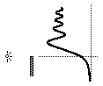
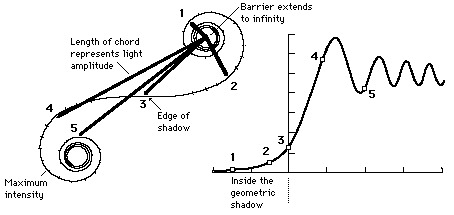

Diffraction by Opaque Barrier
|
The diffraction pattern produced by monochromatic
light and an opaque edge includes light which penetrates
into the geometric shadow and an alternating pattern
of bright and dark fringes outside the shadow.
|

|

|
Index
Diffraction concepts
Fresnel diffraction |